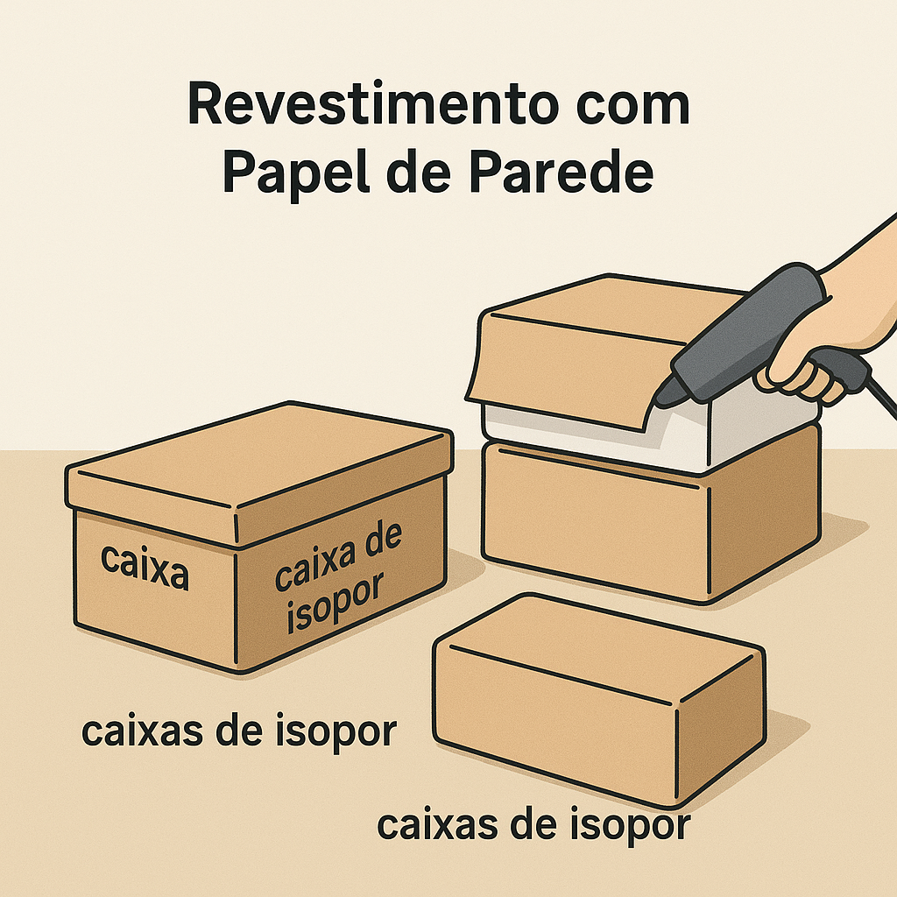
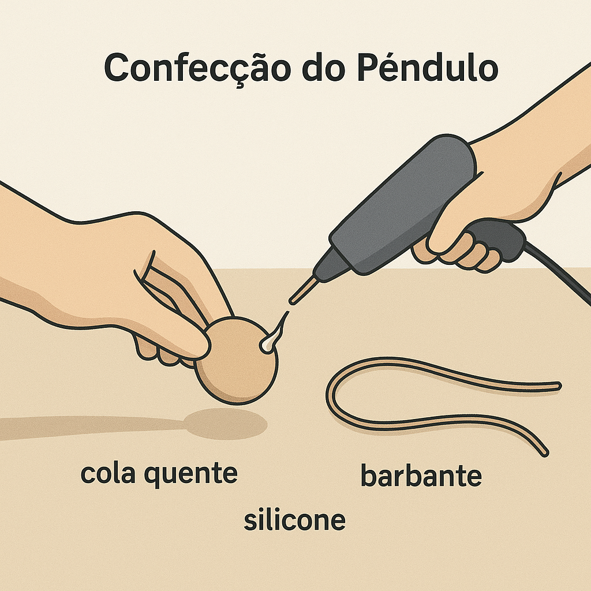
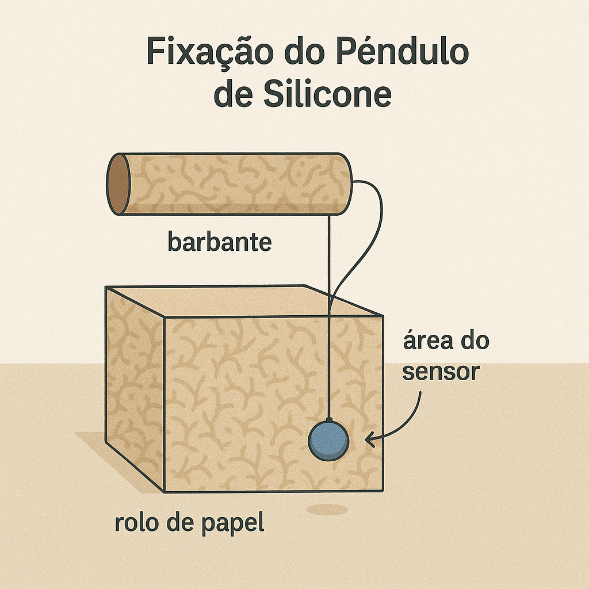
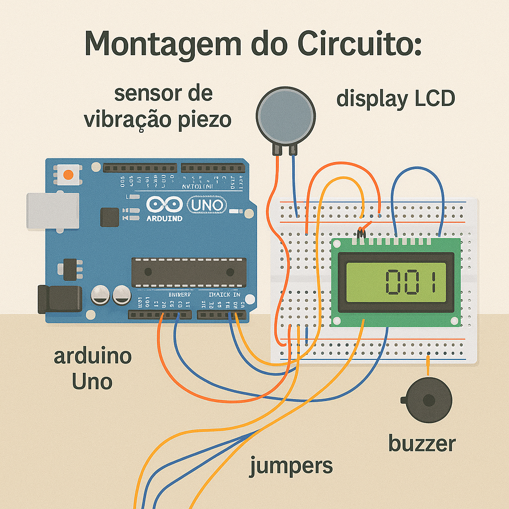
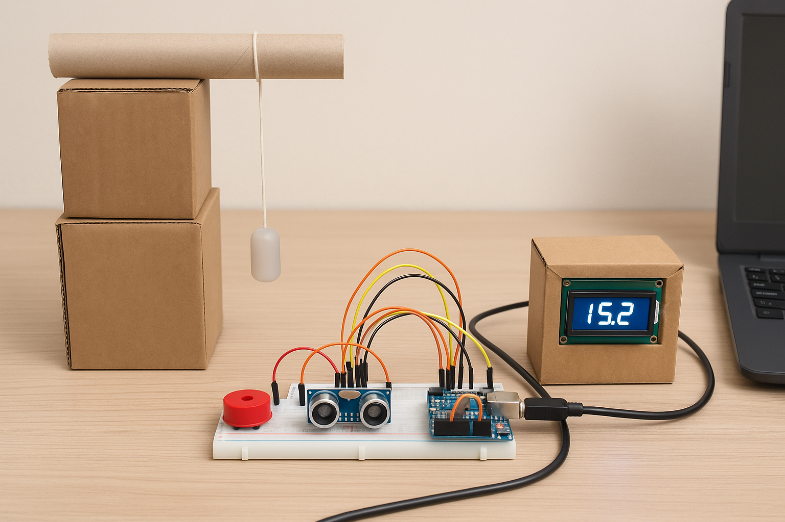

Montando o Circuito 🔨
Siga a ordem abaixo para garantir o funcionamento correto do hardware:
-
Preparação da Base:
Separe as caixas de isopor e a caixa de sapato que serão usadas como base do projeto.
Organize-as de forma que fiquem estáveis sobre a mesa, formando a estrutura onde o circuito
e o pêndulo serão montados.

-
Revestimento com Papel de Parede:
Revista a caixa de sapato e as caixas de isopor com o papel de parede,
colando bem as bordas para não soltar. Isso melhora o acabamento visual do protótipo
e deixa o conjunto mais resistente.

-
Instalação do Rolo de Papel:
Fixe o rolo de papel sobre a base já revestida, usando cola quente para deixá-lo firme.
Ele servirá como suporte para o pêndulo e para complementar o design do projeto.

-
Montagem do Suporte do Pêndulo:
Com o rolo de papel e a estrutura de caixas pronta, defina o ponto onde o pêndulo ficará
suspenso. Passe o barbante pelo local escolhido (no rolo ou em um suporte extra)
e deixe o fio com comprimento suficiente para o movimento do peteleco.

-
Fixação do Pêndulo de Silicone:
Prenda o pêndulo de silicone na ponta do barbante, garantindo que fique bem seguro.
Ajuste a altura para que o pêndulo bata exatamente na área onde o sensor vai capturar o impacto.

-
Montagem do Circuito:
Realize a montagem de todos os componentes no protoboard de acordo com o esquema eletrônico
proposto. Certifique-se de que todas as conexões estejam firmes e corretamente posicionadas.

-
Conexão com o Computador:
Conecte o Arduino ao computador utilizando um cabo USB. Em seguida, abra a IDE,
selecione a porta correta e carregue o código no microcontrolador.

-
Testes de Funcionamento:
Após o carregamento do programa, execute os testes do sistema, verificando se o sensor
responde aos estímulos, se os dados são exibidos corretamente no display e se o buzzer
emite os sinais sonoros.

-
Ajustes Finais:
Realize os ajustes de sensibilidade do sensor e dos tempos de resposta diretamente no código,
conforme a necessidade prática do projeto, garantindo precisão e confiabilidade.

-
Agora é hora de se divertir! 🎉
Explore o funcionamento do projeto, faça diferentes testes com o pêndulo e ajuste a sensibilidade do
sensor
e os tempos de resposta diretamente no código, de acordo com suas necessidades.
Aproveite cada experimento e descubra, na prática, como a tecnologia pode ser precisa, confiável e
divertida!